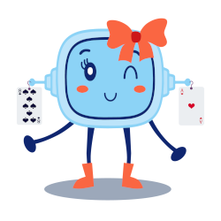

1. Sesión día 1: Experimentando con la probabilidad
Diccionario
Diagrama
Definición:
Es un dibujo geométrico que representa ideas, procesos, mecanismos o soluciones para facilitar su comprensión.
Ejemplo:
Utiliza un diagrama para representar cuántas veces ha salido la cara y la cruz de la moneda.
Entresijos
Definición:
Tener muchas dificultades difíciles de entender o desatar.
Ejemplo:
Me gustaría conocer todos los entresijos de la probabilidad.
Heterogéneos
Definición:
Diversa naturaleza.
Ejemplo:
Los equipos de trabajo son heterogéneos.
Porcentaje
Definición:
Número que representa una cantidad sobre un total de 100. Su símbolo es %.
Ejemplo:
El porcentaje de aciertos ha sido mayor en este juego.
Portavoz
Definición:
Persona que tiene autoridad para representar a un grupo o a una colectividad y hablar en su nombre por haber sido elegida para ello.
Ejemplo:
Elegimos un portavoz para comunicar al resto de la clase los resultados del grupo.
Pedro Laplaza ha quedado con Fortunata Lajusta para que le vaya explicando algunas cuestiones acerca de la probabilidad. Aunque él sabía algo, de la época en la que rodó su película “Kasino Real”, sin embargo, le gustaría saber más, ya que va a invertir su dinero en el montaje del Kasino.
Fortunata quiere ir paso a paso, así que le va a recordar cómo se “contaba” en Matemáticas antes de enseñarle los entresijos de la probabilidad.
Definición:
Tener muchas dificultades difíciles de entender o desatar.
Ejemplo:
Me gustaría conocer todos los entresijos de la probabilidad.
Lectura facilitada
Pedro Laplaza ha quedado con Fortunata Lajusta.
Fortunata Lajusta va a explicar a Pedro el concepto de la probabilidad.
Pedro Laplaza aprendió algunas cuestiones de la probabilidad
cuando rodó su película Kasino Real.
A Pedro Laplaza le gustaría saber más sobre la probabilidad
para montar el casino.
Fortunata quiere ir paso a paso.
Fortunata va a recordar cómo se contaba en Matemáticas.
Después Fortunada enseñará a Pedro más contenidos sobre la probabilidad.
1. Tirando la moneda
Este experimento está diseñado para llevarlo a cabo en grupo. Tu grupo y tú trabajaréis siguiendo la técnica de trabajo colaborativo “Aprender juntos”.
Dividiremos la clase en 5 grupos lo más heterogéneos posibles. Entre los componentes del grupo elegirán a un portavoz, que será el que comunique al resto de la clase los resultados del grupo. A cada grupo se le asignará un número del 1 al 5 para facilitar su identificación del resto.
Cada grupo debe contar con una moneda, preferiblemente de uno o dos euros en las que fácilmente se identifique una cara y una cruz. La experiencia consistirá en lanzar la moneda 20 veces y anotar los resultados obtenidos por el grupo y posteriormente por la clase.
Definición:
Diversa naturaleza.
Ejemplo:
Los equipos de trabajo son heterogéneos.
Lectura facilitada
Vas a trabajar en grupo para hacer este experimento.
La clase se divide en 5 grupos lo más heterogéneos posibles.
El portavoz será quien comunique al resto de la clase los resultados del grupo.
A cada grupo se le asignará un número del 1 al 5 para identificarse.
Cada grupo debe tener una moneda.
La moneda puede ser de uno o dos euros y tener una cara y una cruz.
La experiencia consistirá en:
Tu grupo y tú debéis lanzar la moneda 20 veces.
Tu grupo y tú anotaréis los resultados de vuestro grupo
y los resultados de los otros grupos de la clase.
Tú grupo y tú anotaréis el número de veces que salga la cruz o la cara.
Definición:
Diversa naturaleza.
Ejemplo:
Los equipos de trabajo son heterogéneos.
Definición:
Persona que tiene autoridad para representar a un grupo o a una colectividad y hablar en su nombre por haber sido elegida para ello.
Ejemplo:
Elegimos un portavoz para comunicar al resto de la clase los resultados del grupo.
Para facilitar el recuento y evitar equivocaciones podemos ir anotando cada suceso en la columna de Recuento parcial; se puede ir marcando con una barra “|” por cada caso favorable. Una vez completado el proceso, se hará un recuento y se anotarán las ocurrencias en la columna de Total ocurrencias; por último la columna de porcentaje “%” mostrará el tanto por ciento de las ocurrencias de cada suceso.
Una vez que todos los grupos hayan completados la actividad, el portavoz de cada grupo anotará los resultados de su grupo en la pizarra para que todos los grupos puedan completar la tabla de los resultados de la clase. En esta tabla cada grupo debe volver a calcular los totales de ocurrencias y porcentajes correspondientes a cada suceso.
Una vez finalizado el experimento, cada grupo debe responder cómo han deducido las probabilidades de que la moneda salga cara o salga cruz.
Te dejamos una ficha con la tabla de recuento por grupo y para la clase. Puedes descargar la ficha y rellenarla. Acuérdate de guardarla cuando acabes. También puedes imprimirla y rellenarla en papel
Definición:
Número que representa una cantidad sobre un total de 100. Su símbolo es %.
Ejemplo:
El porcentaje de aciertos ha sido mayor en este juego.
Definición:
Persona que tiene autoridad para representar a un grupo o a una colectividad y hablar en su nombre por haber sido elegida para ello.
Ejemplo:
Elegimos un portavoz para comunicar al resto de la clase los resultados del grupo.
Lectura facilitada
Tu grupo y tú anotad cada suceso en la columna de recuento parcial.
Tu grupo y tú podéis marcar con una barra | cada caso favorable.
Después haced un recuento y anotad las ocurrencias
en la columna de total ocurrencias.
Por último la columna de porcentaje mostrará el tanto por ciento
de las ocurrencias de cada suceso.
El porcentaje se representa con este símbolo %.
El portavoz de cada grupo anotará los resultados de su grupo en la pizarra.
Todos los grupos completaréis la tabla de los resultados de la clase.
Cada grupo debe calcular los totales de ocurrencias y
porcentajes de cada suceso.
Al finalizar el experimento tu grupo y tú debéis responder
cómo los demás grupos han deducido las probabilidades
de que la moneda salga cara o salga cruz.
Puedes usar la tabla recuento por grupo y de toda la clase
Número que representa una cantidad sobre un total de 100. Su símbolo es %.
Ejemplo:
El porcentaje de aciertos ha sido mayor en este juego.
Seguro que te has divertido lanzando la moneda, pero y si lanzamos ahora un dado regular (6 caras), ¿puedes predecir cuántas veces va a salir un uno o un seis si lanzamos el dado 40 veces?
Podéis usar los mismos grupos que ya habíais formado para el lanzamiento de la moneda y realizar el experimento que se detalla en este.
Te dejamos una ficha para este experimento. Puedes descargar la ficha y rellenarla. Acuérdate de guardarla cuando acabes. También puedes imprimirla y rellenarla en papel
Lectura facilitada
Seguro que te has divertido lanzando la moneda.
Puedes probar a lanzar un dado.
¿Puedes saber cuántas veces va a salir un uno o un seis
al lanzar el dado 40 veces?
Puedes hacer este experimento con tu grupo.
El experimento se explica en este documento.
2. Las matrículas de los coches
Seguro que todos los días ves decenas de matrículas de los coches y vehículos que te rodean. Te has preguntado porque utilizan esa codificación con números y letras, ¿has visto alguna vez una matrícula distinta al resto?
Nuestro protagonista Pedro Laplaza que tiene un coche clásico cuya matrícula tiene una codificación diferente de la actual, en concreto su matrícula es:
Sin embargo el coche de Fortunata Lajusta es un modelo eléctrico matriculado hace unos meses con un formato completamente diferente y cuya matrícula es esta:
Esta tarea tendréis que realizarla en grupo y consistirá en contestar a las siguientes preguntas:
¿Cuál es el formato de matriculación por provincias que existía en España?
¿En cuántas provincias se podían matricular los vehículos en España?
¿Cuántas matrículas distintas se podrían formar en una provincia con el sistema antiguo de matriculación por provincias?
¿Cuál es el formato actual de matriculación?
¿En qué año se produjo el cambio de un sistema a otro?
¿Cuántas matrículas se pueden formar con el nuevo sistema?
¿Cuál de los sistemas tiene mayor capacidad para la matriculación de vehículos?
3. Vamos a contar

Saber contar variantes de un problema se llama combinatoria, y te ayudará a resolver problemas de probabilidad. Para poder calcular las probabilidades de un suceso necesitas contar cuántos casos favorables hay o cuántos casos posibles existen al realizar un experimento aleatorio.
Por ejemplo imaginas que has olvidado parte de la clave de tu correo electrónico, te faltan los tres últimos caracteres que eran 3 números y tan solo recuerdas que acababa en 3 o en 5. Puedes contestar a preguntas como:
¿Cuántas combinaciones son posibles?
Si dispones de 3 intentos, ¿qué probabilidad tienes de acertar la clave?
Para poder resolver situaciones como la del ejemplo, lo primero que tendrás que recordar son tus conocimientos sobre técnicas de recuento y combinatoria. A veces para contar viene bien hacer algún diagrama en árbol, un esquema o un dibujo.
¿Te animas con estas actividades para poner en práctica tus conocimientos previos?
Definición:
Es un dibujo geométrico que representa ideas, procesos, mecanismos o soluciones para facilitar su comprensión.
Ejemplo:
Utiliza un diagrama para representar cuántas veces ha salido la cara y la cruz de la moneda.
Lectura facilitada
Combinatoria se llama a saber contar variantes de un problema.
La combinatoria te ayudará a resolver problemas de probabilidad.
Necesitas contar cuántos casos favorables hay al realizar un experimento aleatorio
para poder calcular las probabilidades de un suceso.
Observa este ejemplo.
Imagina que has olvidado parte de la clave de tu correo electrónico.
Te faltan los tres últimos caracteres que son 3 números.
Sólo recuerdas que la clave acaba en 3 o en 5.
Contesta a estas preguntas:
¿Cuántas combinaciones son posibles?
Sólo tienes 3 intentos para poner la clave correcta.
¿Qué probabilidad tienes de acertar la clave?
Para poder resolver situaciones como la anterior tienes que:
Recordar conocimientos sobre técnicas de recuento y combinatoria.
Hacer algún diagrama en árbol, un esquema o un dibujo.
¿Te animas con estas actividades para poner en práctica lo que sabes?
Definición:
Es un dibujo geométrico que representa ideas, procesos, mecanismos o soluciones para facilitar su comprensión.
Ejemplo:
Utiliza un diagrama para representar cuántas veces ha salido la cara y la cruz de la moneda.
Ayuda con la combinatoria
En los problemas de combinatoria tienes que identificar dos aspectos clave:
Si influye el orden de selección de los elementos o no.
Si se pueden repetir o no dichos elementos.
Si necesitas algo de ayuda te dejamos esta infografía para que te aclares.
Opción A: ¿Variaciones, combinaciones o permutaciones?
Responde verdadero o falso a las siguientes cuestiones sobre combinatoria y comentad en clase el porqué son verdaderas o falsas:
Retroalimentación
Falso
Es falsa, ya que tanto en las variaciones con repetición como sin repetición el orden influye.
Retroalimentación
Falso
Es falsa ya que los diagramas en árbol también ofrecen información sobre la ordenación de las soluciones.
Retroalimentación
Verdadero
¡Correcta!
Retroalimentación
Falso
Es una afirmación falsa ya que aunque en las permutaciones influye el orden, si no se utilizan todos los elementos utilizaremos las variaciones con repetición (ya que se pueden repetir los elementos).
Retroalimentación
Verdadero
¡Pregunta correcta!
Retroalimentación
Falso
Falso, recuerda que las combinaciones se utilizan cuando no influye el orden. En este caso como hay que ordenar a todos los elementos utilizaremos las permutaciones de 5 elementos.
Fortunata ha olvidado el PIN de su móvil, de los cuatro dígitos sólo recuerda dos cosas, que empieza por 3 y que el resto de números son todos pares, también recuerda que ninguno de ellos es repetido. Ella quiere saber cuántos números diferentes son posibles.
¿Puedes ayudarla a averiguar cuántos números diferentes puede probar?
Si quieres ordenar ideas puedes seguir estas indicaciones:
Pista 1
Empieza por 3, por tanto el primer digito es fijo.
Pista 2
Los 3 dígitos restantes son números pares, es decir, que dispones de 5 cifras pares para los tres dígitos siguientes.
Pista 3
Los dígitos no están repetidos (sin repetición).
Después de aclarar las pistas seguro que sabes encontrar la estrategia más apropiada para resolver el problema.
¿Te has equivocado en algo al hacer las actividades?
Cuando queremos aprender algo, lo normal es equivocarse al principio. Fallar forma parte de aprender. ¿Recuerdas cuando montaste en bici por primera vez? ¿o cuando intentabas nadar en el agua? Seguro que al principio no fue fácil, pero cada vez que fallabas, lo intentabas de nuevo. Con cada fallo aprendemos del error y lo mejoramos para la vez siguiente.
Para aprender de tus errores sigue estos consejos:
Me doy cuenta de en qué parte he fallado.
Busco la forma de mejorar ese error.
Lo intento de nuevo.
Entiendo que el error es importante para aprender.
No lo olvides: cuando te equivocas una vez, aprendes para el siguiente intento.
Confeccionar una tabla de frecuencias
Debes recoger en una tabla de frecuencias el número de primos y primas que tienen tus compañeros y luego representarla mediante un diagrama de barras USANDO ALGÚN PROGRAMA INFORMÁTICO. Se valorará la originalidad de la gráfica.